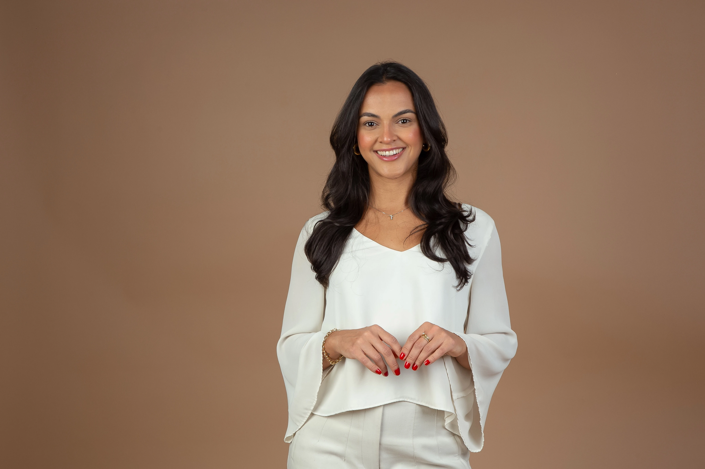
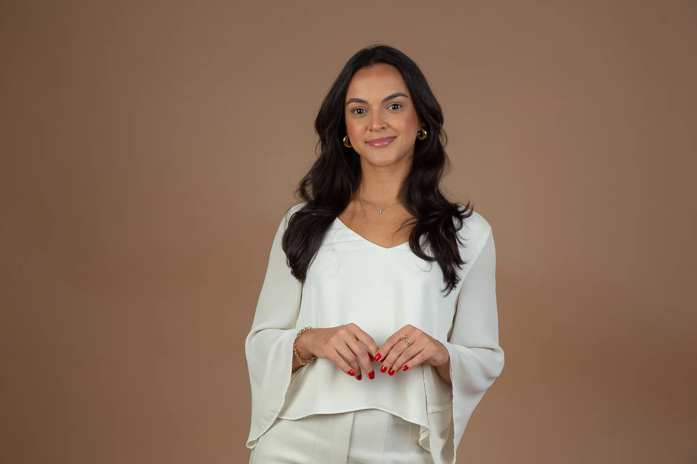

Individualidade
Seu plano é pensado para a sua rotina, preferências e necessidades.

Acredito que uma alimentação saudável precisa ser possível de manter na vida real. Por isso, cada plano alimentar é construído considerando sua individualidade, rotina, preferências e objetivos. Mais do que entregar uma dieta pronta, meu propósito é ajudar você a desenvolver escolhas e hábitos que possam ser sustentados a longo prazo.
Seu plano é pensado para a sua rotina, preferências e necessidades.
A alimentação é planejada de acordo com seus objetivos e momento de vida.
O foco é construir hábitos que façam sentido a longo prazo.

Nutricionista em Brasília. Ajudo você a encontrar uma estratégia alimentar eficiente, possível e sustentável.
Minha missão na nutrição é contribuir para mudanças reais na vida dos meus pacientes através da alimentação e de hábitos mais saudáveis. Acredito em uma nutrição individualizada, que considera não apenas o objetivo, mas também a rotina, as preferências, as necessidades e a realidade de cada pessoa. Meu trabalho é ajudar você a encontrar uma estratégia alimentar que seja eficiente, possível e sustentável.
Reduza peso e gordura corporal com estratégias que se encaixam na sua rotina e que você consegue manter a longo prazo.
Quero emagrecerNutrição estratégica alinhada à sua rotina de treinos para otimizar o ganho de massa muscular e potencializar seus resultados.
Quero ganhar massaAvaliação e cuidado nutricional integrados aos exames laboratoriais, com estratégias personalizadas para cuidar da sua saúde de forma individualizada.
Cuidar da minha saúdeEstratégias nutricionais personalizadas para melhorar a saúde intestinal, aliviar desconfortos e promover mais bem-estar.
Quero cuidar do meu intestinoAtendimento individualizado de 1h a 1h30, com tempo para conhecer você, seus hábitos, suas necessidades, objetivos e dificuldades.
Analisar suas necessidades e identificar os principais pontos que precisam de atenção.
Construir um plano alimentar personalizado de acordo com seus objetivos, preferências e rotina. Sem dietas prontas ou restrições desnecessárias.
Acompanhar sua adaptação e ajustar a estratégia conforme sua evolução a cada consulta.
Acompanhamento próximo pelo WhatsApp entre as consultas, para esclarecer dúvidas, ajustar o plano (se necessário) e te ajudar a manter a constância durante o processo.
Os dois. A diferença é só a avaliação física: online, ela é feita por peso e fotos de frente, lado e costas.
Em média, de 1h00 a 1h30.
Composição corporal por circunferências, dobras (adipômetro) e fotos para acompanhar as mudanças.
Da adolescência à terceira idade.
Cartão de crédito, débito e pix.